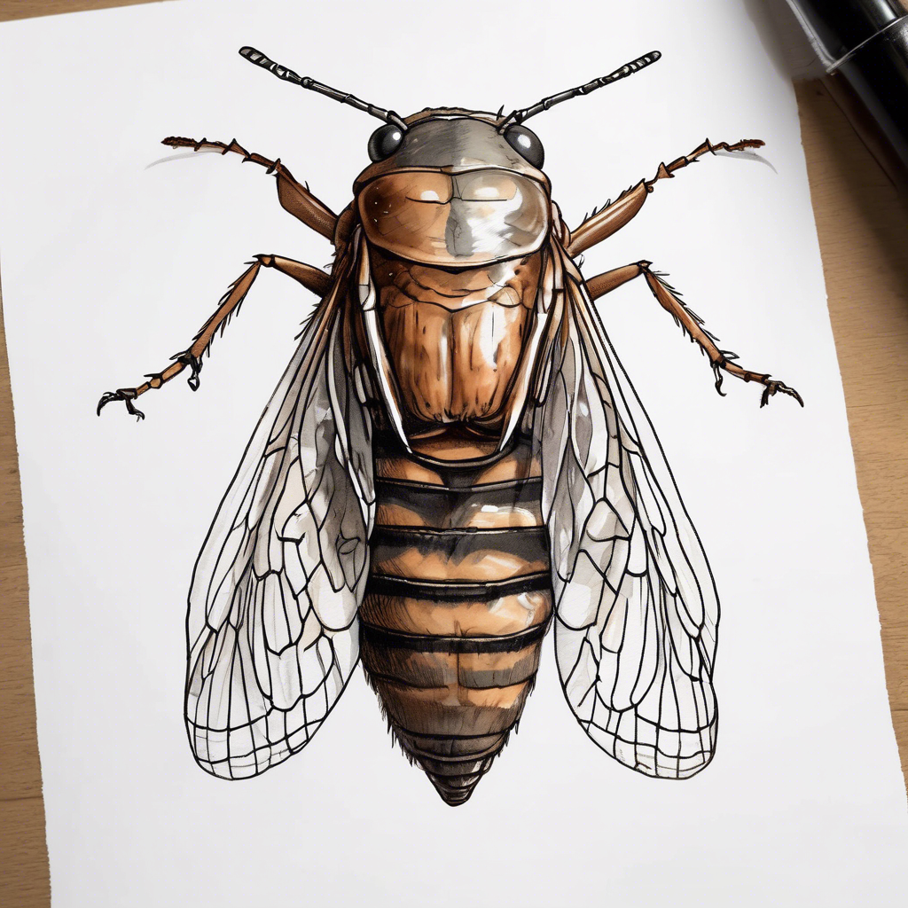

시끄러운 매미

매미 소개
매미는 여름을 대표하는 곤충이에요. 큰 날개와 투명한 날개맥이 특징이에요.
크기는 3-4cm 정도이고, 수컷만 소리를 낼 수 있어요!
매미의 생활
- 땅 속에서 5-7년을 애벌레로 살아요
- 어른이 되면 2-3주만 살아요
- 나무의 수액을 먹어요
- 배에 있는 특별한 막으로 소리를 내요
재미있는 사실!
매미는 땅 속에서 가장 오래 사는 곤충이에요! 어떤 매미는 무려 17년 동안이나 땅 속에서 살다가 어른이 된답니다.
냄새나는 노린재

노린재 소개
노린재는 방패 모양의 몸을 가진 곤충이에요. 위험할 때 냄새를 내서 '노린내 벌레'라고도 불러요.
크기는 1-2cm 정도로 작아요.
노린재의 생활
- 식물의 즙을 빨아먹어요
- 위험할 때 냄새로 적을 물리쳐요
- 알에서 깨어나면 5번 허물을 벗어요
- 겨울에는 나뭇잎 아래에서 겨울잠을 자요
재미있는 사실!
노린재는 입이 빨대처럼 생겼어요! 이 특별한 입으로 식물의 즙을 빨아먹을 수 있답니다.
물에 사는 물노린재

물노린재 소개
물노린재는 물 속에서 사는 특별한 노린재예요. 뒷다리가 노처럼 생겨서 헤엄치기 좋아요.
크기는 2-3cm 정도이고, 물 속에서 다른 작은 생물을 잡아먹어요.
물노린재의 생활
- 물 속에서 살지만 날 수도 있어요
- 작은 물고기나 올챙이를 잡아먹어요
- 등에 공기방울을 달고 다녀요
- 밤에 불빛을 보고 날아오기도 해요
재미있는 사실!
물노린재는 물 속에서 숨을 쉬기 위해 등에 공기방울을 달고 다녀요. 마치 작은 산소통을 가지고 다니는 것처럼요!